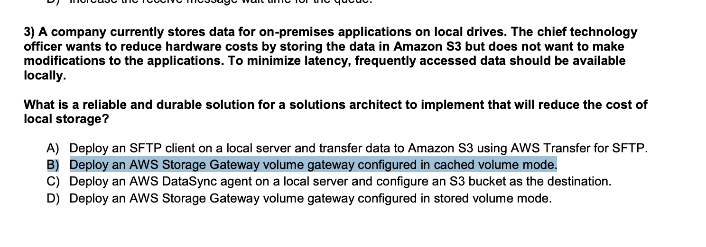

AWS Aurora Read Replica Failover
- Today we are making Aurora even more flexible by giving you control over the failover priority of each read replica.
- Each read replica is now associated with a priority tier (0-15).
- In the event of a failover, Amazon RDS will promote the read replica that has the highest priority (the lowest numbered tier).
- If two or more replicas have the same priority, RDS will promote the one that is the same size as the previous primary instance.
Cancelling Spot instance request
If you no longer want your Spot Instance request, you can cancel it. You can only cancel Spot Instance requests that are open, active, or disabled.
- Your Spot Instance request is open when your request has not yet been fulfilled and no instances have been launched.
- Your Spot Instance request is active when your request has been fulfilled and Spot Instances have launched as a result.
- Your Spot Instance request is disabled when you stop your Spot Instance.
If your Spot Instance request is active and has an associated running Spot Instance, canceling the request does not terminate the instance.
If your Spot Instance request is active and has an associated running Spot Instance, or your Spot Instance request is disabled and has an associated stopped Spot Instance, canceling the request does not terminate the instance; you must terminate the running Spot Instance manually.
If you terminate a running or stopped Spot Instance that was launched by a persistent Spot request, the Spot request returns to the open state so that a new Spot Instance can be launched. To cancel a persistent Spot request and terminate its Spot Instances, you must cancel the Spot request first and then terminate the Spot Instances. Otherwise, the persistent Spot request can launch a new instance.
Stop/Start spot instance
The feature of stopping a persistent is available for persistent Spot requests.
- You will not be charged for instance usage while your instance is stopped.
- EBS volume storage is charged at standard rates.
Upon restart, the EBS root device is restored from its prior state, previously attached data volumes are reattached, and the instance retains its instance ID.
Spot Instance interruptions
You can specify that Amazon EC2 should do one of the following when it interrupts a Spot Instance:
- Stop the Spot Instance
- Hibernate the Spot Instance
- Terminate the Spot Instance
The default is to terminate Spot Instances when they are interrupted. To change the interruption behavior, see Specifying the interruption behavior.
AWS Active Directory
AWS Microsoft AD (Standard Edition) offers you a highly available and cost-effective primary directory in the AWS Cloud that you can use to manage users, groups, and computers.
1 (Data transfer pricing)

C. Using private IP address will make transfer within the same AZ free. No impact on across-AZ transfer.

Data transfer cost
Data transferred between EC2 instances or containers, or Elastic Network Interfaces in the same availability zone and same VPC via public or Elastic IPv4 addresses are charged at $0.01 per GB for egress traffic and $0.01 per GB for ingress traffic.
Data transferred between EC2 instances or containers, or Elastic Network Interfaces in the same availability zone and same VPC over private IPv4 or IPv6 addresses are free.


Data transferred between EC2 instances or containers, or Elastic Network Interfaces across availability zones or VPC peering connections via public, private or Elastic IPv4, or IPv6 addresses is charged at $0.01 per GB for egress traffic and $0.01 per GB for ingress traffic.
Free transfer in: Internet -> AWS regions
Data transfer into all AWS regions from the Internet is free.
Charged transfer out: AWS regions -> Internet
Data transfer out to the Internet from all AWS regions is billed at region-specific, tiered data transfer rates.
Charged across regions: AWS Region -> Another AWS Region
Data transfer out from the local AWS region to another AWS region is charged at source region-specific data transfer rates. These costs are typically labeled as InterRegion Inbound or InterRegion Outbound transfer type in the monthly AWS bills.
Data transfer via: On site -> AWS Region free, AWS->site charged
AWS Direct Connect is an AWS network service that provides an alternative to using the Internet to connect customer’s on-premise sites to AWS. Customers connect their pre-existing data center or office network to AWS via an AWS Direct Connect location.
Data transfer into AWS regions through AWS Direct Connect locations is free.
Data transfer out of AWS regions through AWS Direct Connect is charged.

Services with free transfer within same region
Data transferred between services in the same AWS Region is free
- Amazon S3, Amazon Glacier,
- Amazon DynamoDB,
- Amazon SES, Amazon SQS,
- Amazon Kinesis,
- Amazon ECR,
- Amazon SNS or
- Amazon SimpleDB and
- Amazon EC2
Data transferred “in” to and “out” from Amazon Classic and Application Elastic Load Balancers using private IP addresses, between EC2 instances and the load balancer in the same AWS Region is free.
Services with a charge across availability zones
Data transferred “in” to and “out” from
- Amazon EC2,
- Amazon RDS,
- Amazon Redshift,
- Amazon DynamoDB Accelerator (DAX), and
- Amazon ElastiCache instances or
- Elastic Network Interfaces
across Availability Zones or VPC Peering connections in the same AWS Region is charged at $0.01/GB in each direction.
Data transferred between
- Amazon EC2,
- Amazon RDS,
- Amazon Redshift,
- Amazon ElastiCache instances and
- Elastic Network Interfaces
in the same Availability Zone is free.
S3 Data Transfer Cost
Free for:
- Transfer into S3
- Transfer out from Amazon S3 to Amazon CloudFront
- Data transferred out to an Amazon Elastic Compute Cloud (Amazon EC2) instance, when the instance is in the same AWS Region as the S3 bucket.
Charges for:
- PUT, COPY, POST, LIST, GET requests
- Storage, per GB per month
- Transfer across region
Edge location data transfer
Data transfer out of AWS edge locations to the Internet is billed at region-specific, tiered data transfer rates.
Into edge location is free.
App Mesh
Application-level networking for all your services.
AWS App Mesh is a service mesh that provides application-level networking to make it easy for your services to communicate with each other across multiple types of compute infrastructure. App Mesh standardizes how your services communicate, giving you end-to-end visibility and ensuring high-availability for your applications.
2: S3 Versioning/MFA Deletion

B. With versioning, you can easily recover from both unintended user actions and application failures.
S3 Versioning
When you enable versioning for a bucket, if Amazon S3 receives multiple write requests for the same object simultaneously, it stores all of the objects.
If you enable versioning for a bucket, Amazon S3 automatically generates a unique version ID for the object being stored. In one bucket, for example, you can have two objects with the same key, but different version IDs, such as photo.gif (version 111111) and photo.gif (version 121212).
S3 MFA Deletion
Needs to have versioning enabled.
Applies to a bucket.
3 (ALB Dynamic Port Mapping)

Dynamic Port Mapping
- The Classic Load Balancer doesn’t allow you to run multiple copies of a task on the same instance. Instead, with the Classic Load Balancer, you must statically map port numbers on a container instance.
- However, an Application Load Balancer uses dynamic port mapping, so you can run multiple tasks from a single service on the same container instance.
This image from this blog relly helps:

Path-based routing
You can create a listener with rules to forward requests based on the URL path. This is known as path-based routing. If you are running microservices, you can route traffic to multiple back-end services using path-based routing. For example, you can route general requests to one target group and requests to render images to another target group.
4 (ELB and ASG)

ELB Connection Draining
- In order to provide a first-class use experience, you’d like to avoid breaking open network connections while taking an instance out of service, updating its software, or replacing it with a fresh instance that contains updated software.
- Connection Draining is enabled by default for load balancers that are created using the Console.
- When Connection Draining is enabled and configured, the process of deregistering an instance from an Elastic Load Balancer gains an additional step.
- For the duration of the configured timeout, the load balancer will allow existing, in-flight requests made to an instance to complete, but it will not send any new requests to the instance.
- During this time, the API will report the status of the instance as
InService, along with a message stating that “Instance deregistration currently in progress.” Once the timeout is reached, any remaining connections will be forcibly closed.

Scaling cooldowns for Amazon EC2 Auto Scaling
- A scaling cooldown helps you prevent your Auto Scaling group from launching or terminating additional instances before the effects of previous activities are visible.
- By default, all simple scaling policies use the default cooldown period associated with your Auto Scaling group, but you can configure a different cooldown period for certain policies, as described in the following sections.
- When you use simple scaling, after the Auto Scaling group scales using a simple scaling policy, it waits for a cooldown period to complete before any further scaling activities due to simple scaling policies can start.
- An adequate cooldown period helps to prevent the initiation of an additional scaling activity based on stale metrics.
Target Group Deregistration delay
- Elastic Load Balancing stops sending requests to targets that are deregistering.
- By default, Elastic Load Balancing waits 300 seconds before completing the deregistration process, which can help in-flight requests to the target to complete.
- The initial state of a deregistering target is
draining. After the deregistration delay elapses, the deregistration process completes and the state of the target isunused. If the target is part of an Auto Scaling group, it can be terminated and replaced.
ALB Target Group Sticky sessions
- Sticky sessions are a mechanism to route requests to the same target in a target group. This is useful for servers that maintain state information in order to provide a continuous experience to clients. To use sticky sessions, the clients must support cookies.
- If you enable sticky sessions, this overrides the routing algorithm of the target group after the initial target selection.
- If you are using multiple layers of Application Load Balancers, you can enable sticky sessions on one layer only, because the load balancers would use the same cookie name.
- WebSockets connections are inherently sticky. If the client requests a connection upgrade to WebSockets, the target that returns an HTTP 101 status code to accept the connection upgrade is the target used in the WebSockets connection. After the WebSockets upgrade is complete, cookie-based stickiness is not used.
- You enable sticky sessions at the target group level. You can also set the duration for the stickiness of the load balancer-generated cookie, in seconds.
- The duration is set with each request. Therefore, if the client sends a request before each duration period expires, the sticky session continues.
Answer to this question
B. Enable Connection Draining on the ALB.
- Connection Draining: Happens when ASG scales in. It is an attribute of ELB.
- Deregistration Delay: Happens when a target is deregistered from a target group. It is an attribute of a target group.
5 (KMS)

Cryptographic Keys on KMS
AWS Key Management Service (AWS KMS) provides cryptographic keys and operations secured by FIPS 140-2 certified hardware security modules (HSMs) scaled for the cloud.
KMS Customer Master Key
- Customer master keys are the primary resources in AWS KMS.
- A customer master key (CMK) is a logical representation of a master key.
- The CMK includes metadata, such as the key ID, creation date, description, and key state.
- The CMK also contains the key material used to encrypt and decrypt data.
- CMKs are created in AWS KMS. Symmetric CMKs and the private keys of asymmetric CMKs never leave AWS KMS unencrypted.
Security of KMS
- AWS KMS is designed so that no one, including AWS employees, can retrieve your plaintext CMKs from the service.
- All CMKs regardless of their creation date or origin are automatically protected using HSMs that have been validated under FIPS 140-2, or are in the process of being validated. No action is required on your part to use the FIPS 140-2 validated HSMs.
You cannot export a key from KMS
CMKs are created and used only within the service to:
- help ensure their security,
- enable your policies to be consistently enforced,
- provide a centralized log of their use.
AWS KMS requests logging in CloudTrail
Logs in AWS CloudTrail will show all AWS KMS API requests, including both management requests (e.g. create, rotate, disable, policy edits) and cryptographic requests (e.g. encrypt/decrypt). Turn on AWS CloudTrail in your account to view these logs.
KMS v.s. CloudHSM
- AWS Key Management Service (KMS) is a multi-tenant, managed service that allows you to use and manage encryption keys.
- AWS CloudHSM provides a dedicated, FIPS 140-2 Level 3 HSM under your exclusive control, directly in your Amazon Virtual Private Cloud (VPC).
=> You choose CloudHSM when you need an isolated hardware module to comply to FIPS 140-2 Level 3.
Envelope Encryption
- AWS KMS facilitates a Two-tiered envelope encryption operational model using Master Key (Customer Managed Key or AWS Managed Key – Default Key) and Data Keys.
- AWS KMS helps you to protect your master keys by storing and managing them securely. Master keys stored in AWS KMS, known as customer master keys (CMKs), never leave the AWS KMS FIPS validated hardware security modules unencrypted. To use an AWS KMS CMK, you must call AWS KMS.
6 (Firewall Services)

AWS Firewall Manager
AWS Firewall Manager is a security management service which allows you to centrally configure and manage firewall rules across your accounts and applications in AWS Organization.
- Using AWS Firewall Manager, you can easily roll out AWS WAF rules for your Application Load Balancers, API Gateways, and Amazon CloudFront distributions.
- Similarly, you can create AWS Shield Advanced protections for your Application Load Balancers, ELB Classic Load Balancers, Elastic IP Addresses and CloudFront distributions.
- Finally, with AWS Firewall Manager, you can enable security groups for your Amazon EC2 and ENI resource types in Amazon VPCs.
AWS WAF (Web Application Firewall)
- You can filter any part of the web request, such as IP addresses, HTTP headers, HTTP body, or URI strings.
- This allows you to block common attack patterns, such as SQL injection or cross-site scripting.
- AWS WAF is easy to deploy and protect applications deployed on either Amazon CloudFront as part of your CDN solution, the Application Load Balancer that fronts all your origin servers, or Amazon API Gateway for your APIs.
- With AWS Firewall Manager integration, you can centrally define and manage your rules, and reuse them across all the web applications that you need to protect.
- The pricing is based on how many rules you deploy and how many web requests your application receives. There are no upfront commitments.
AWS Shield
- When you use AWS Shield Standard with Amazon CloudFront and Amazon Route 53, you receive comprehensive availability protection against all known infrastructure (Layer 3 and 4) attacks.
- For higher levels of protection against attacks targeting your applications running on Amazon Elastic Compute Cloud (EC2), Elastic Load Balancing (ELB), Amazon CloudFront, AWS Global Accelerator and Amazon Route 53 resources, you can subscribe to AWS Shield Advanced.
- Free always-on AWS Shield Standard
- With AWS Shield Advanced, customers get AWS WAF and AWS Firewall Manager at no additional cost for usage on resources protected by AWS Shield Advanced.
- Additionally, you get “DDoS cost protection for scaling”, a feature that protects your AWS bill from usage spikes on your AWS Shield Advanced protected EC2, Elastic Load Balancing (ELB), Amazon CloudFront, AWS Global Accelerator, and Amazon Route 53 resources as a result of a DDoS attack.
7 (Spot Instance/Request Lifecycle)
You must first cancel a Spot Request, and then terminate the associated Spot Instances. See Spot instance lifecycle and requirements for details.
A one-time Spot Instance request remains active until Amazon EC2 launches the Spot Instance, the request expires, or you cancel the request. If the Spot price exceeds your maximum price or capacity is not available, your Spot Instance is terminated and the Spot Instance request is closed. Your one-time request will have already been inactive when you have the instance, so you can just terminate it.
A persistent Spot Instance request remains active until it expires or you cancel it, even if the request is fulfilled.
Cancelling a persistent spot instance request does not automatically terminate the spot instance.
8 (S3 lifecycle)

Keyword: Rarely accessed, need to be durable, available immediately upon request
9

10

11

12

13

14

15

16

17

18

19

20

21 - Storage Gateway

Storage Gateway
AWS Storage Gateway offers file-based, volume-based, and tape-based storage solutions:
File Gateway
File Gateway – A file gateway supports a file interface into Amazon Simple Storage Service (Amazon S3) and combines a service and a virtual software appliance.
- you can store and retrieve objects in Amazon S3 using industry-standard file protocols such as Network File System (NFS) and Server Message Block (SMB).
- A file gateway simplifies file storage in Amazon S3, integrates to existing applications through industry-standard file system protocols, and provides a cost-effective alternative to on-premises storage.
Volume Gateway
- A volume gateway provides cloud-backed storage volumes that you can mount as Internet Small Computer System Interface (iSCSI) devices from your on-premises application servers.
- The volume gateway is deployed into your on-premises environment as a VM running on VMware ESXi, KVM, or Microsoft Hyper-V hypervisor.
The gateway supports the following volume configurations:
- Cached volumes – You store your data in Amazon Simple Storage Service (Amazon S3) and retain a copy of frequently accessed data subsets locally. Cached volumes offer a substantial cost savings on primary storage and minimize the need to scale your storage on-premises. You also retain low-latency access to your frequently accessed data.
- Stored volumes – If you need low-latency access to your entire dataset, first configure your on-premises gateway to store all your data locally. Then asynchronously back up point-in-time snapshots of this data to Amazon S3. This configuration provides durable and inexpensive offsite backups that you can recover to your local data center or Amazon Elastic Compute Cloud (Amazon EC2). For example, if you need replacement capacity for disaster recovery, you can recover the backups to Amazon EC2.
Tape Gateway
A tape gateway provides cloud-backed virtual tape storage. The tape gateway is deployed into your on-premises environment as a VM running on VMware ESXi, KVM, or Microsoft Hyper-V hypervisor.
With a tape gateway, you can cost-effectively and durably archive backup data in GLACIER or DEEP_ARCHIVE. A tape gateway provides a virtual tape infrastructure (cold back-up).
22 - ENI

Elastic Network Interface
Every instance in a VPC has a default network interface, called the primary network interface. You cannot detach a primary network interface from an instance. You can create and attach additional network interfaces. The maximum number of network interfaces that you can use varies by instance type.
DHCP(Dynamic Host Configuration Protocol)
In computer science, the Dynamic Host Configuration Protocol is a network management protocol used on Internet Protocol networks, whereby a DHCP server dynamically assigns an IP address and other network configuration parameters to each device on the network, so they can communicate with other IP networks.
23 - SQS times

Long Polling
When the ReceiveMessageWaitTimeSeconds property of a queue is set to a value greater than zero, long polling is in effect.
- Long polling reduces the number of empty responses by allowing Amazon SQS to wait until a message is available before sending a response to a ReceiveMessage request.
- The maximum long polling wait time is 20 seconds.
- Long polling helps reduce the cost of using Amazon SQS by
- eliminating the number of empty responses (when there are no messages available for a ReceiveMessage request) and
- false empty responses (when messages are available but aren’t included in a response).
Differences between long and short polling
Short polling occurs when the WaitTimeSeconds parameter of a ReceiveMessage request is set to 0 in one of two ways:
- The ReceiveMessage call sets
WaitTimeSecondsto 0. - The ReceiveMessage call doesn’t set WaitTimeSeconds, but the queue attribute
ReceiveMessageWaitTimeSecondsis set to 0.
Message Retention Period
Amazon SQS automatically deletes messages that have been in a queue for more than maximum message retention period. The default message retention period is 4 days. However, you can set the message retention period to a value from 60 seconds to 1,209,600 seconds (14 days) using the SetQueueAttributes action.
Dead Letter Queue
Amazon SQS supports dead-letter queues, which other queues (source queues) can target for messages that can’t be processed (consumed) successfully. Dead-letter queues are useful for debugging your application or messaging system because they let you isolate problematic messages to determine why their processing doesn’t succeed.
You exercise control over the Dead Letter Queue using a Redrive Policy, which contains two values:
- Maximum Receives – The maximum number of times that a message can be received by consumers. When this value is exceeded for a message the message will be automatically sent to the Dead Letter Queue.
- Dead Letter Queue – The ARN (Amazon Resource Name) of an SQS queue that will receive the messages which were not successfully processed after maximum number of receives by consumers.
Visibility Timeout
- When a consumer receives and processes a message from a queue, the message remains in the queue. Amazon SQS doesn’t automatically delete the message. The consumer must delete the message from the queue after receiving and processing it.
- Immediately after a message is received, it remains in the queue. To prevent other consumers from processing the message again, Amazon SQS sets a visibility timeout, a period of time during which Amazon SQS prevents other consumers from receiving and processing the message.
- The default visibility timeout for a message is 30 seconds. The minimum is 0 seconds. The maximum is 12 hours.
GuardDuty
- Amazon GuardDuty is a threat detection service that continuously monitors for malicious activity and unauthorized behavior to protect your AWS accounts, workloads, and data stored in Amazon
- GuardDuty analyzes tens of events across multiple AWS data sources, such as AWS CloudTrail event logs, Amazon VPC Flow Logs, and DNS logs.
- By integrating with Amazon CloudWatch Events, GuardDuty alerts are actionable, easy to aggregate across multiple accounts, and straightforward to push into existing event management and workflow systems.